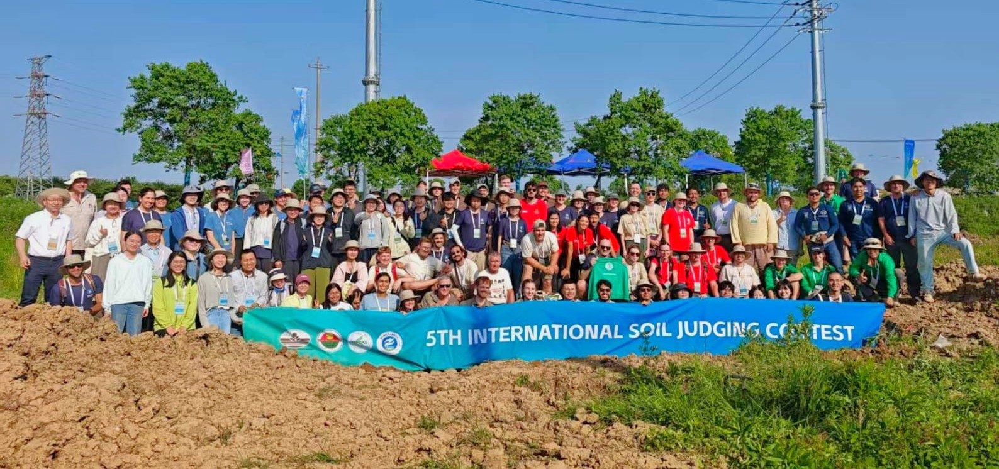

Contest Recap: The 5th International Soil Judging Contest Brings a Record 14 Countries Together in China
Published: August 2026 | Written by: Jaclyn Fiola, William Hernández, Elizabeth Eroshenko & John Galbraith
In early June, at the same time national teams were traveling to North America for the World Cup, a very different — but no less prestigious — international competition was underway in China. Eighteen teams representing 14 countries gathered in Nanjing, China, for the 5th International Soil Judging Contest, hosted by the Institute of Soil Science, Chinese Academy of Sciences (ISSAS). This global competition is held every four years in conjunction with the World Congress of Soil Science. Teams of four students/early-career soil scientists plus one or two coaches were chosen to represent their countries on the international stage.
After months of preparation at home, participants were welcomed to Nanjing. The welcome dinner included a gift exchange, where each participant brought a small gift representing their home country or region and exchanged gifts with another participant. The next three days included both classroom and field training from international experts. Soils of the region were introduced by Ganlin Zhang, Biao Huang, and Fei Yang of the ISSAS.
This contest was the first time contestants were asked to learn and apply two different global soil classification systems: U.S. Soil Taxonomy and the World Reference Base for Soil Resources. Peter Schad (Germany) and John Galbraith (USA) are international experts who were involved in developing those systems and provided training on them. Brian Needelman, Maxine Levin, Elizabeth Eroshenko, and William Hernández (all of the USA) also gave guest lectures.
Training in Nanjing
Swipe or use the arrows · tap a photo to enlarge it
In the field, participants were immersed in the description and interpretation of soil profiles in the Nanjing and Jurong area. They encountered a diverse array of soils and landscapes shaped by both natural forces and centuries of human intervention. Notable among these were thick deposits of ice-age loess, which are deposits of silt and clay between 100,000 and 300,000 years old. Participants also described fluvial soils deposited by the Yangtze, the longest river in China and the third longest river in the world. The region's warm, wet climate, combined with this fertile parent material, has made the land highly productive. Today, much of this terrain is terraced and used for wheat fields, rice paddies, tea plantations, and home gardens, supporting agriculture that has continued for over 3,000 years.
To manage water for rice cultivation, plow pans are sometimes intentionally created with heavy machinery to perch water and maintain flooded conditions. The extensive terracing has also resulted in human-transported topsoil being placed over most of the original soils, often evidenced in orchards and tea plantations. Despite the fertility, many soils in this region experience seasonal saturation in the mid-to-upper subsoils, a limitation that restricts their suitability for certain crops and land uses.
Participants got to see and describe soil features such as human artifacts, gleyic and stagnic horizons, calcaric materials, and anthraquic conditions. They identified soil parent materials ranging from anthropogenic to aeolian to fluvial. Then, they used their profile descriptions to interpret the soil's characteristics, including depth, available water capacity, and potential water erosion. Finally, participants classified in both World Reference Base and Soil Taxonomy; the soils included Alfisols, Inceptisols, and Mollisols (Soil Orders in Soil Taxonomy) and Luvisols, Stagnosols, Anthrosols, and Phaeozems (Soil Reference Groups in WRB).
Field training in Nanjing and Jurong
Swipe or use the arrows · tap a photo to enlarge it
In addition to training and sharing meals, participants enjoyed multiple social and educational events that built camaraderie. Contest attendees had the opportunity to visit the renowned Soil Museum of China, housed at the ISSAS. The museum holds 500 soil monoliths and over 60,000 soil samples from China and other countries. The following night, attendees visited Xuanwu Lake in the central-northeast part of Nanjing. Here, participants enjoyed a guided tour around the lake, complete with local music, dancing, and shops.
Soil Museum of China and Xuanwu Lake
Swipe or use the arrows · tap a photo to enlarge it
On the final day of the event, the participants tested their soil profile description skills and knowledge alongside 72 others. They described two profiles individually and two as a group with their team, including a wet, sandy Eutric Luvic Stagnosol (Transportic) (WRB) / Aquic Hapludalf (ST) and a very-clayey, human-influenced Hydragric Anthrosol (Eutric) (WRB) / Anthraquic Epiaquept (ST).
Contest day
Swipe or use the arrows · tap a photo to enlarge it
Awards were possible in three categories: individual, group, and overall (a combined score of group and individual). The highest scoring individual of the 72 participants was Holden Mrizek, representing Team USA. He was closely followed by fellow countrymate Jakob Scheckel (USA) in 2nd place, Callie Goodwin in 3rd (USA), Zie Goodman in 4th (USA), and Li Jiaqi in 5th (China).
Team “Barefoot” Germany took home the top Group Judging prize after describing two soil profiles together as a team (yes, they competed barefoot!). Rounding out the top five groups were Russia Krotovinas, USA Stars, Poland, and Korea.
The title of World Champion Soil Judging Team, which requires both individual and group excellence, went to Team USA Stripes! The top five overall teams were:
- USA Stripes: Holden Mrizek, Zie Goodman, Cole Chapman, and Sinclair Anderson (coached by Gordon Rees and Paul Tietz).
- USA Stars: Jakob Schecke, Callie Goodwin, India Williams, and Emma Quint (coached by Joey Meinert and Damon LeMaster).
- Germany: Sebastian Kolbinger, Jule Schwormstede, Simon Marx, and Alexander Tevzadze (coached by Tobias Klöffel and Andreas Wild).
- Russia Krotovinas: Chepurnova Mariia, Leontev Alexandr, Anastasiia Kornilova, and Bodalev Konstantin (coached by Fatima Kurbanova).
- China A: Li Jiaqi, Duan Siyi, Zhang Shuopeng, and Yu Xiaomiao (coached by Zhong-Xiu Sun).
Other competing countries were Australia, Korea, Japan, Mexico, New Zealand, Poland, Portugal, South Africa, Spain, and the United Kingdom.
Awards
Swipe or use the arrows · tap a photo to enlarge it
Soil judging has become a popular worldwide experiential learning opportunity with multiple educational and career benefits. Contests are designed to promote soil science and soil survey skills through lectures and field trips led by expert soil scientists. The first International Contest was held in 2014 in Jeju, South Korea, followed by contests in Hungary, Brazil, and Scotland. The 2026 contest had the highest participation ever, with the largest number of countries and individual participants. The next International Contest will be in 2030 in Toronto, Canada.
The 2026 International Contest was the result of multiple years of international collaboration and effort. The International Soil Judging Working Group of the International Union of Soil Sciences led organization efforts, including developing contest materials, guides to classification, training webinars, and more. The Working Group is chaired by Brian Needelman of the USA, and co-chaired by John Galbraith (USA) and Minerva Garcia Carmona (Spain).
Local efforts were led by Contest Co-Chairs Fei Yang (China/ISSAS) and John Galbraith (USA), including the contest program, logistics, and training site determination. Peter Schad (Germany), Elizabeth Eroshenko (USA), and William Hernández (USA) served as official judges. Ganlin Zhang (China/ISSAS) provided training along with a team of dedicated volunteer soil scientists, including Biao Huang, Jinlong Dong, Xin Song, Rosa Poch, Axel Ceron Gonzalez, Cornie van Huyssteen, Maxine Levin, Alexander Tevzadze, Frank Oliver, Kai Zhao, Tingting Yue, and Xinyue Qiu.
Congratulations to every participant who stepped into the soil pits! The true heart of soil judging has always been about the learning experience. The participants didn't just compete; they interpreted new landscapes, identified complex soil features, and shared knowledge across global borders. Every participant departed with improved field skills and a deeper connection to the global scientific community. Thank you to all the coaches, organizers, volunteers, and participants who made this learning journey possible.
For more information on this contest, see the official website at 23wcss.org.cn. To keep up with International Soil Judging, follow along on social media (@SoilJudgingIUSS).
More from the contest
Swipe or use the arrows · tap a photo to enlarge it
Written by Jaclyn Fiola, William Hernández, Elizabeth Eroshenko & John Galbraith.
Related coverage
- Behind the soil scenes The volunteers and working group who ran it.
- Horizonate this soil profile Try the exercise yourself.
- Team USA at the World Cup of soil judging How the winning team got there.
- Beyond borders: the British Society of Soil Science in China The UK team's account of the contest.
- Connecting Through Soil, Advancing Through Contest The organisers' official report (Word file, 3 MB).